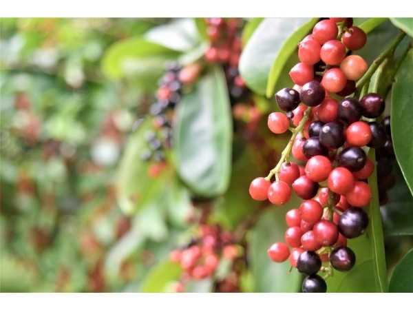

Antidesma bunius
Common Names: Bignay, Bugnay, Chinese Laurel, Currant Tree, Herbert River Cherry
Local Name: Bignay (Filipino/Tagalog)
Family: Phyllanthaceae
Origin: Southeast Asia (Philippines, Indonesia, Malaysia, India)
Plant Type: Perennial evergreen to semi-deciduous tree
Variety: Wild species; dioecious (separate male and female trees)
Average Lifespan: 40–60 years
| Growth Habit | Medium evergreen tree with dense rounded canopy |
| Plant Size | 8–20 meters tall; canopy spread 6–10 meters |
| Leaves | Alternate, simple, oblong-elliptic, 10–20 cm long, glossy dark green, leathery |
| Flowers | Tiny, greenish-yellow, in drooping racemes 5–15 cm long; dioecious |
| Flower Characteristics | Dioecious — separate male and female trees; male flowers in longer racemes; wind and insect pollinated |
| Fruit | Small round drupe, 8–12 mm diameter, in grape-like hanging clusters; juicy with single seed |
| Fruit Color | Green to red to dark purple-black when fully ripe; fruits ripen unevenly on cluster |
| Seed Characteristics | Single small flattened seed per fruit |
| Root System | Deep taproot with lateral spreading roots |
| Climate | Tropical to warm subtropical; tolerates some drought |
| Temperature Range | 22–35°C ideal; tolerates brief cold to 0°C when mature |
| Rainfall Requirement | 1000–3000 mm annually; adaptable |
| Soil Type | Adaptable; grows in poor soils, sandy, clay, and limestone |
| Soil pH Preference | 5.5–7.5 |
| Sun Requirement | Full sun to partial shade |
| Spacing | 6–8 meters between trees; plant male nearby for pollination |
| Irrigation Method | Rain-fed in most areas; supplemental watering in dry periods |
| Water Requirement | Low to moderate; drought-tolerant once established |
| Can it Grow in Pots? | Young trees possible in large containers; not long-term |
| Fertilizer Schedule | Twice yearly; minimal inputs needed |
| Recommended Organic Fertilizers | Compost, well-rotted manure |
| Pesticide Frequency | Rarely needed; naturally pest-resistant |
| Recommended Organic Pesticides | Neem oil if needed |
| Mulching Practice | Organic mulch beneficial for moisture retention |
| Training System | Natural form; minimal training |
| Pruning Time | After fruiting season |
| How to Prune | Remove dead branches; thin canopy for light penetration |
| Common Pests | Birds (fruit predators); minimal insect pests |
| Common Diseases | Generally disease-free; occasional leaf spot |
| Disease Prevention & Remedies | Good air circulation; rarely needs treatment |
| Flowering Months | March–May |
| Fruiting Season | June–September; fruits ripen progressively on cluster |
| Days to Harvest | 60–90 days from flowering |
| Harvest Indicators | Majority of fruits on cluster turn dark purple-black; harvest entire cluster |
| Average Yield per Plant | 30–60 kg per tree per year (female tree) |
| Pollination Type | Wind and insect pollination; dioecious (needs male tree) |
| Pollination Notes | Must plant male tree nearby for fruit production; 1 male per 8–10 females |
| Pollination Details | Dioecious; wind-pollinated primarily; male tree essential for fruit set |
| Propagation by Seeds | Seeds germinate in 2–4 weeks; cannot determine sex until flowering (3–5 years) |
| Propagation by Cuttings | Air layering from known female trees ensures sex; roots in 6–8 weeks |
| Propagation by Grafting | Grafting from female trees onto seedling rootstock |
| Water Usage | Low; drought-tolerant once established |
| Soil Conservation Practices | Dense canopy prevents erosion; grows on marginal land |
| Organic Practices Used | Zero-input tree; thrives without chemicals |
| Companion Plants | Other native fruit trees; shade-tolerant understorey crops |
| Biodiversity Benefits | Important food source for birds; supports forest biodiversity |
| Commercial Production Regions | Philippines, Indonesia, Malaysia, India, Northern Australia |
| Market Uses | Fresh fruit, wine, juice, jam |
| Processing Uses | Bignay wine, vinegar, jam, jelly, juice, dried fruit |
| Market Value (Approx.) | ₱40–100 per kg (Philippines); bignay wine commands premium |
| Symbolism | Traditional Filipino fruit; associated with rural heritage and home wine-making |
| Traditional Uses | Fruit made into wine and vinegar; leaves used in traditional medicine as tea for hypertension |
| Calories | 60 kcal per 100g |
| Dietary Fiber | 1.8 g per 100g |
| Vitamin C | Moderate amounts |
| Vitamin A | Present |
| Iron | 0.8 mg per 100g |
| Potassium | Present |
| Antioxidants | Rich in anthocyanins (dark purple pigment), polyphenols |
| Other Key Nutrients | Calcium, phosphorus, organic acids |
| Anxiety & Sleep | Not documented |
| Immune Support | Antioxidant-rich fruit supports immune function |
| Anti-inflammatory Properties | Anthocyanins provide anti-inflammatory benefits |
| Heart Health | Leaf tea traditionally used for hypertension in the Philippines |
| Digestive Health | Fruit and bark used in folk medicine for digestive complaints |
Disclaimer: Information provided is for educational purposes only and not a substitute for medical advice.
Add your field observations here.